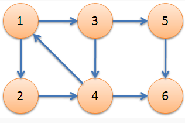
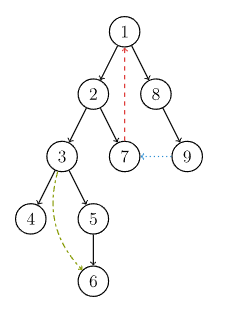

强联通分量
Copyright
本页面贡献者：zrz。
本页面内容遵循 MIT 协议，转载请附上原文出处链接和本声明。
强连通
在有向图G中，如果两点互相可达，则称这两个点强连通，如果G中任意两点互相可达，则称G是强连通图。
简单性质
- 一个有向图是强连通的，当且仅当G中有一个回路（环），它至少包含每个节点一次。
- 非强连通有向图的极大强连通子图，称为强连通分量（SCC即Strongly Connected Componenet）。

1，2，3，4是一个强连通分量，5和6是另两个强连通分量
Tarjan 算法
Tarjan简介
Robert E. Tarjan（罗伯特·塔扬，1948~），生于美国加州波莫纳，计算机科学家。
Tarjan 发明了很多算法结构。不少他发明的算法都以他的名字命名，以至于有时会让人混淆几种不同的算法。比如求各种连通分量的 Tarjan 算法，求 LCA（Lowest Common Ancestor，最近公共祖先）的 Tarjan 算法。并查集、Splay、Toptree 也是 Tarjan 发明的。
我们这里要介绍的是在有向图中求强连通分量的 Tarjan 算法。
DFS 生成树
在介绍该算法之前，先来了解 DFS 生成树，我们以下面的有向图为例：

有向图的 DFS 生成树主要有 4 种边（不一定全部出现）：
- 树边（tree edge）：示意图中以黑色边表示，每次搜索找到一个还没有访问过的结点的时候就形成了一条树边。
- 回边（back edge）：示意图中以红色边表示（即 7 -> 1），指向祖先结点的边。
- 横叉边（cross edge）：示意图中以蓝色边表示（即 9 -> 7），它主要是在搜索的时候遇到了一个已经访问过的结点，但是这个结点 并不是 当前结点的祖先。
- 前向边（forward edge）：示意图中以绿色边表示（即 3 -> 6），它是在搜索的时候遇到子树中的结点的时候形成的。
我们考虑 DFS 生成树与强连通分量之间的关系。
有如下结论:
如果结点 是某个强连通分量在搜索树中遇到的第一个结点，那么这个强连通分量的其余结点肯定是在搜索树中以 为根的子树中。结点 被称为这个强连通分量的根。
Tarjan
Tarjan的本质就是在dfs时维护一些变量，并根据变量的值进行操作
维护如下变量:
- dfn[u]：dfs时达到顶点u的次序号（时间戳）dfs序
- low[u]：从u出发的dfs树中 最小的次序号,追溯值
- 开始时对任意顶点u，先将顶点u入栈，给其加上时间戳dfn[u]=low[u]=++num
- 扫描u能到达的顶点v，如果v没有被访问过，则dfs(v)外加 low[u]=min(low[u],low[v])，如果v在栈low[u]=min(low[u],dfn[v])，
- 扫描完v以后，如果dfn[u]=low[u]，则将从栈顶到u之间的点出栈，可以发现这些点的low值一样，且只有“源头”处的low = dfn
代码
时间复杂度:O(n*m)
1
2
3
4
5
6
7
8
9
10
11
12
13
14
15
16
17
18
19 | //声明变量
#define ms(a,v) memset(a,v,sizeof(a))
int n,m;
const int maxn = 10005; //点数
int head[maxn],cnt = 0;
struct {
int u,v,next;
}e[100005];
void add(int u,int v){
e[cnt].u = u;
e[cnt].v = v;
e[cnt].next = head[u];
head[u] = cnt++;
}
int low[maxn],dfn[maxn],vis[maxn];//vis数组是记录点是否在栈内 dfn是记录每个点dfs序
stack<int> s;
int num = 0;//dfs序计数，或者理解为时间戳
int lis_num = 0;//强连通分量的个数
int tag[maxn];//tag是记录每个点的属于几号连通分量
|
| //初始化代码
void inits(){
lis_num = 0;num = 0;cnt = 0;
ms(head,-1);
ms(vis,0);
ms(tag,0);
ms(dfn,0);
ms(low,0);
}
|
1
2
3
4
5
6
7
8
9
10
11
12
13
14
15
16
17
18
19
20
21
22
23
24
25 | void Tarjan(int now){
s.push(now);//栈可以数组代替
vis[now] = 1;
dfn[now] = low[now]= ++num;
for(int i=head[now];~i;i=e[i].next){
int v = e[i].v;
if(!dfn[v]){
Tarjan(v);
low[now] = min(low[now],low[v]);
}
else if(vis[v]){
low[now] = min(low[now],dfn[v]);
}
}
if(dfn[now]==low[now]){//出栈
lis_num++;
int t;
do{
t = s.top();
vis[t] = 0;
tag[t] = lis_num;//这个可以没有如果不需要记录联通分量的序号
s.pop();
}while(t!=now);
}
}
|
缩点
思考：
- 对一张图用tarjan算法处理过后，可以把有向有环图中每个强连通分量（其中的每两个点都互相可达）看作是一个新的点，最终建立起一张新的有向无环图（DAG）。
- 有向无环图必定不是强连通的，（由强连通的定理可证）。
代码
可用于DAG的缩点（有别于并查集的缩点）
例如：
1
2
3
4
5
6
7
8
9
10
11
12
13
14 | for(int i=1; i<=n; i++)
{
int sz=g[i].size();
for(int j=0; j<sz; j++)
{
int v=g[i][j];
if(color[v]!=color[i])
{
du[color[i]]++;
//在这里可以建一个新的图
}
}
cnt[color[i]]++;//统计每一个分量的点数
}
|
参考例题
problem
学校网络
1
2
3
4
5
6
7
8
9
10
11
12
13
14
15
16
17
18
19
20
21
22
23
24
25
26
27
28
29
30
31
32
33
34
35
36
37
38
39
40
41
42
43
44
45
46
47
48
49
50
51
52
53
54
55
56
57
58
59
60
61
62
63
64
65
66
67
68
69
70
71
72
73
74
75
76
77
78 | #include <bits/stdc++.h>
#define ms(a,v) memset(a,v,sizeof(a))
using namespace std;
int n;
const int maxn = 105; //点数
int head[maxn],cnt = 0;
struct {
int v,next;
}e[100005];
void add(int u,int v){
e[cnt].v = v;
e[cnt].next = head[u];
head[u] = cnt++;
}
int low[maxn],dfn[maxn],vis[maxn];
stack<int> s;
int num = 0;//dfs序计数，或者理解为时间戳
int lis_num = 0;//强连通分量的个数
int tag[maxn];//tag是记录每个点的属于几号连通分量
int in[maxn],ot[maxn];
void Tarjan(int now){
s.push(now);//栈可以数组代替
vis[now] = 1;
dfn[now] = low[now]= ++num;
for(int i=head[now];~i;i=e[i].next){
int v = e[i].v;
if(!dfn[v]){
Tarjan(v);
low[now] = min(low[now],low[v]);
}
else if(vis[v]){
low[now] = min(low[now],dfn[v]);
}
}
if(dfn[now]==low[now]){//出栈
lis_num++;
int t;
do{
t = s.top();
vis[t] = 0;
tag[t] = lis_num;//这个可以没有如果不需要记录联通分量的序号
s.pop();
}while(t!=now);
}
}
int main(){
cin>>n;
ms(head,-1);
for(int i = 1; i <= n;i++){
int x;
while(1){
scanf("%d",&x);
if(x==0)break;
add(i,x);
}
}
for(int i = 1;i <= n;i++)if(!dfn[i]){
Tarjan(i);
}
for(int i = 1; i <= n; i++){
for(int j = head[i]; ~j; j = e[j].next)
{
int v = e[j].v;
if(tag[v] != tag[i])
{
in[tag[v]]++;
ot[tag[i]]++;
}
}
}
int a = 0,b = 0;
for(int i = 1;i <= lis_num; i++){
if(in[i] == 0)a ++;
if(ot[i] == 0)b ++;
}
if(lis_num == 1)printf("1\n0");
else printf("%d\n%d\n",a,max(a,b));
}
|
参考资料